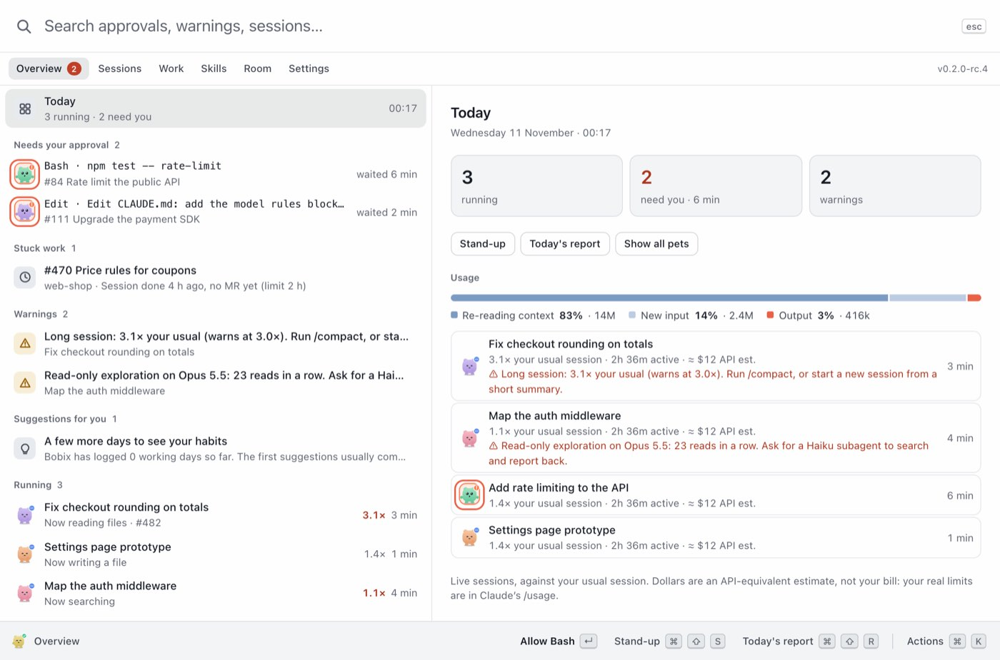
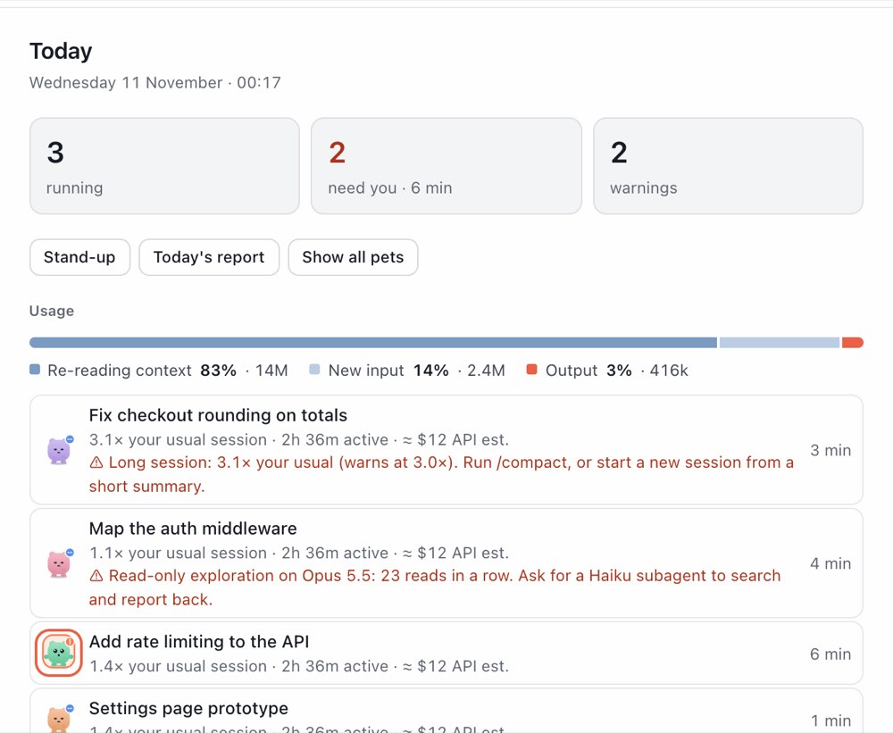
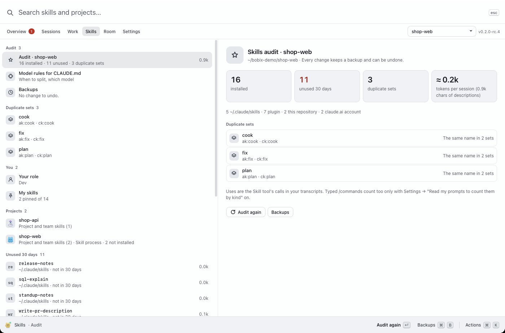

Trợ lý cá nhân để làm việc tốt với Claude Code.
Bobix theo dõi các session thay bạn: session nào đang làm, session nào cần bạn, mỗi session tốn bao nhiêu, và skill nào có thể bỏ.

Biết ngay từng session đang thế nào.
Chạy nhiều session Claude Code cùng lúc: mỗi session có một chú thú hình icon phẳng đi dọc mép màn hình.
Đang làm
Đi lại; bong bóng cho biết Claude đang làm gì, như “đang chạy lệnh”.
Cần bạn
Nhảy lên với bong bóng đỏ và vòng cam khi Claude chờ bạn duyệt.
Xong
Vẫy tay rồi nhảy lên, kèm dấu tick xanh khi session xong lượt.
Nghỉ
Ngủ khi không có gì xảy ra; một lúc sau nó rời khỏi màn hình.
Duyệt ngay trên chú thú hoặc trong bảng điều khiển
Khi Claude xin quyền, bạn trả lời ngay trên chú thú, trong bảng điều khiển (↵ để cho phép) hoặc trên thông báo (macOS). Mặc định Bobix giữ yêu cầu cho đến khi bạn trả lời ở đó; Claude vẫn hỏi trong terminal cùng lúc, nên bạn trả lời ở đâu cũng được. Đặt giới hạn thời gian trong Cài đặt thì hết giờ Bobix sẽ nhả yêu cầu.
Session phụ đứng cạnh session gốc
Trong app Claude desktop, session được mở từ session khác đứng ngay cạnh nó, nên bạn thấy ai bắt đầu việc gì.
Năm chú thú, mỗi dự án một chú
Mọi session của một dự án có cùng một chú thú (sinh vật Bobix, Nota cuốn sổ, Tty cái terminal, Miso chú mèo hay Ship chiếc tên lửa) với màu riêng.
Hơn một chú thú: làm việc tốt hơn với Claude Code.
Bobix đọc các transcript mà Claude vốn đã ghi trên máy bạn. Nó báo sớm khi một session bắt đầu tốn kém, và giúp bạn giữ gọn các skill.
Mức dùng theo từng session, kèm cảnh báo
Xem token, các model đã dùng, thời gian làm việc và phần đọc lại ngữ cảnh, đặt cạnh một session thường lệ của chính bạn. Số đô la chỉ là ước tính theo giá API và bạn ẩn được. Ba cảnh báo nói rõ lý do và việc nên làm tiếp:
- Session quá dài: nén lại, hoặc mở session mới từ một bản tóm tắt ngắn.
- Model nặng cho việc nhẹ: thử Sonnet.
- Khám phá chỉ-đọc trên model nặng: giao cho một subagent Haiku.
Ngưỡng nằm trong Cài đặt. Bobix không đọc đăng nhập Claude của bạn và không gọi API tài khoản hay hạn mức.

Kiểm kê skill, hoàn tác được
Với mỗi dự án, Bobix liệt kê mọi skill Claude nạp, mỗi skill được dùng bao nhiêu lần trong 30 ngày qua, skill nào chưa dùng, skill nào trùng nhau, và phần mô tả tốn bao nhiêu mỗi lượt. Tắt hoặc xoá skill của bạn chỉ bằng một cú bấm: mỗi thay đổi đều có bản sao lưu và nút Hoàn tác.
- Skill của plugin không bao giờ bị đổi: Bobix chỉ cho bạn thấy cài đặt sẽ tắt plugin đó.
Không có gì được ghi nếu bạn chưa bấm.

Quy tắc chọn model cho CLAUDE.md
Một khối ngắn “khi nào tách session, dùng model nào” (khám phá bằng Haiku, sửa bằng Sonnet, review bằng Opus). Bobix cho xem đúng nội dung trước và chỉ thêm khi bạn đồng ý. Hoàn tác trả tệp về đúng từng byte.
Một bộ khởi chạy, không phải dashboard
Một cửa sổ: ô tìm kiếm, rồi Tổng quan · Phiên · Công việc · Skill · Phòng · Cài đặt. ↑ ↓ để di chuyển, ↵ cho hành động chính, ⌘K cho mọi hành động.
Bấm để mở
Thẳng tới session trong app Claude desktop, hoặc đưa cửa sổ Terminal, iTerm hay VS Code lên trước.
Ngày làm việc của bạn
Ticket từ GitLab hoặc GitHub cùng các session của chúng: đang làm, chờ review, cần làm, kèm gợi ý việc tiếp theo.
Thông báo
Khi session cần duyệt hoặc xong, có thể kèm âm thanh.
Không làm phiền
Chọn màn hình, cạnh trên hoặc dưới, kích thước và độ trong suốt. Thú mờ đi khi con trỏ lại gần. Chỉ hiện thú khi nó cần bạn.
Nhẹ máy
Một app native nhỏ: khoảng 4 MB, và không vẽ lại gì khi không có thú nào hiện.
Cài trong khoảng hai phút.
- Mở file
.dmgrồi kéo Bobix vào Applications. - Bản build chưa được Apple notarize nên lần đầu mở sẽ bị chặn: bấm chuột phải vào app → Open → Open, hoặc chạy
xattr -cr "/Applications/Bobix.app". - Bobix nằm trên thanh menu, không có biểu tượng trên Dock.
Hoặc từ terminal
Lệnh cho chip Apple. Máy Intel thì đổi thành Bobix-mac-x64.dmg. Thoát Bobix trước nếu đang chạy.
curl -fL -o /tmp/Bobix.dmg https://github.com/baonguyen-agilityio/bobix/releases/latest/download/Bobix-mac-arm64.dmg
hdiutil attach -nobrowse -quiet -mountpoint /tmp/bobix-dmg /tmp/Bobix.dmg
rm -rf /Applications/Bobix.app && cp -R /tmp/bobix-dmg/Bobix.app /Applications/
hdiutil detach -quiet /tmp/bobix-dmg && xattr -cr /Applications/Bobix.app && open /Applications/Bobix.app- Chạy file cài. App cài cho riêng tài khoản của bạn, không cần quyền admin.
- File chưa được ký số nên SmartScreen có thể báo “Windows protected your PC”: bấm More info → Run anyway.
- Bobix nằm ở khay hệ thống, có thể trong mũi tên ^.
Hoặc từ terminal
PowerShell.
$f = "$env:TEMP\Bobix-windows-x64.exe"; Invoke-WebRequest https://github.com/baonguyen-agilityio/bobix/releases/latest/download/Bobix-windows-x64.exe -OutFile $f; Start-Process $f- Cài file
.debrồi mở Bobix từ menu ứng dụng. - Trên Wayland, Bobix chạy qua XWayland để chú thú luôn nằm trên cùng.
- Muốn bấm chú thú đưa terminal lên trước thì cài
xdotool. Các bản Linux khác chưa có gói cài.
Hoặc từ terminal
Lệnh cho amd64. Máy ARM thì đổi thành bobix-linux-arm64.deb.
curl -fL -o /tmp/bobix.deb https://github.com/baonguyen-agilityio/bobix/releases/latest/download/bobix-linux-amd64.deb && sudo apt install -y /tmp/bobix.debNút tải luôn lấy bản ổn định mới nhất (hiện là v0.1.3). Bản thử như v0.2.0-rc.5, có các chú thú và bảng điều khiển mới trên trang này, là bản phát hành thử: chọn trong tất cả bản phát hành.
Rồi kết nối Claude Code
- Mở BobixLần đầu, bảng điều khiển mở ở trang Kết nối.
- Bấm Cài hooksBobix thêm hooks vào
~/.claude/settings.json, giữ nguyên các hook khác và lưu bản backup. - Gửi một promptTrong session Claude Code bất kỳ. Chú thú của nó sẽ xuất hiện.
Muốn xem trước? Gửi sự kiện thử trong trang Kết nối hiện một session giả.
Gỡ cài đặt
- Kết nối → Gỡ hooks. Chỉ các hook của Bobix bị xoá.
- Cài đặt → tắt Tự mở khi đăng nhập máy.
- Thoát từ biểu tượng ở khay / thanh menu rồi xoá app.
- Dọn thêm nếu muốn:
~/.claude/bobix/, các bản backup~/.claude/settings.json.bak-bobix-*và thư mục cài đặt (~/Library/Application Support/Bobix,%APPDATA%\Bobixhoặc~/.config/Bobix).
Không có Node.js
Hook dùng curl hoặc PowerShell. Mọi thứ vẫn chạy, trừ bấm vào chú thú sẽ mở chi tiết thay vì mở session. Cài Node.js rồi bấm Cài lại trong Kết nối để có lại.
Gặp lỗi khi cài? Xem hướng dẫn cài đặt.
Chạy trên máy bạn. Không gì về các session rời khỏi máy.
- Tài khoản
- Không cần. Không có analytics.
- Mạng
- Mỗi ngày hỏi GitHub có bản mới chưa. Không gửi gì về bạn, và bạn tắt được.
- Hook gửi đi
- Tên tool, đường dẫn file hoặc lệnh, prompt của bạn. Không bao giờ gửi nội dung file hay kết quả tool.
- Mức dùng và skill
- Đọc từ transcript của chính bạn trên máy này: model, số token, tên tool và tên skill. Không đọc nội dung prompt hay câu trả lời.
- Kết nối
- Chỉ tới Bobix qua 127.0.0.1, kèm token riêng của từng người dùng.
- Lưu giữ
- Session chỉ nằm trong bộ nhớ. Với session đã xong, các con số về mức dùng (không bao giờ là văn bản) nằm trong một tệp bạn xoá được.
- Thay đổi
- Chỉ khi bạn bấm, luôn có bản sao lưu và nút Hoàn tác.
Mọi thứ Bobix đọc, ghi và chạy: Quyền riêng tư và bảo mật.